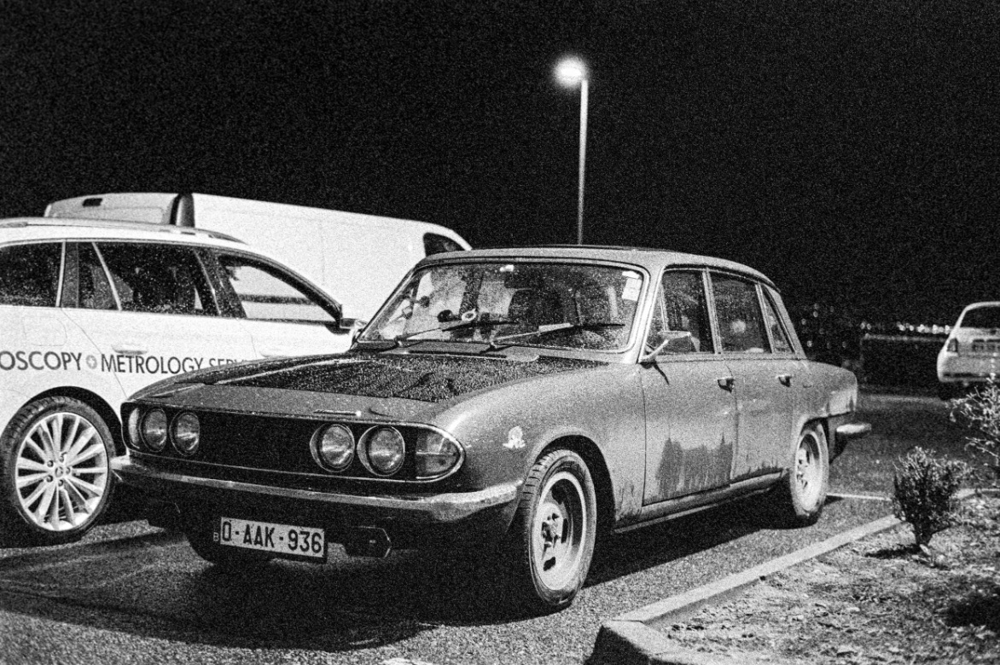
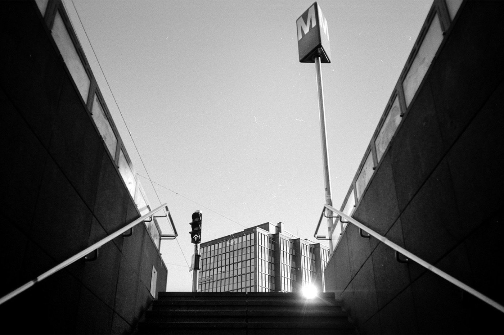
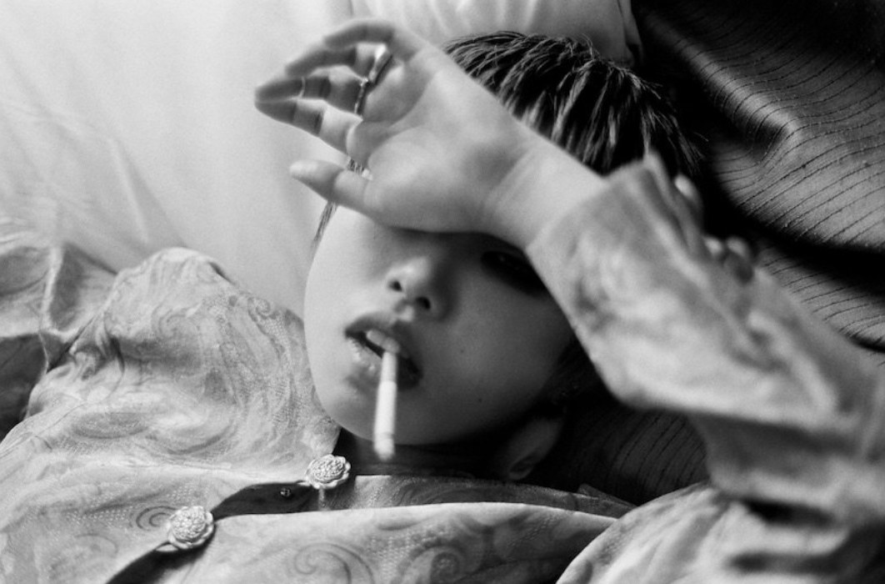

同一台相机拍了 15 年，他把演唱会后台卖成了周边
胶卷网站 Kosmo Foto 的主编上周做了一件很多人想做没做成的事：他把 20 年拍一支乐队攒下的底片，做成了一盒明信片，2026 年 10 月在巡演现场开卖。 新闻本身很小。但它值得玩胶片的人看一眼，因为他把方法写出来了 —— 这些东西，你手里那个文件夹今天就能用。
| 这一件事 | 能确认到什么程度 | 依据 |
|---|---|---|
| 拍了 20 年一支乐队的后台 | ✅ 有自述与方法 | Kosmo Foto 2026-10-04 署名文章，本人第一人称 |
| 全部用黑白胶卷，按 6400 曝光 | ✅ 原文写明 | 原文：「pushed to high ISOs – sometimes as high as 6400」 |
| 器材固定在两台尼康 + 两支镜头 | ✅ 原文写明 | 2011 年起固定；此前用过 Voigtländer Bessaflex TM、Bessa R，另有一场用 Pentax ES II |
| 明信片盒 17 张，本周巡演开卖 | ✅ 有具体构成与渠道 | 取自 2007 与 2011 两次欧洲巡演；其中一张成为乐队 2011 年专辑《Skins》封面 |
| 限量 35 张的 12×10 收藏冲印 | ✅ 原文写明 | 11 月中旬起在 Kosmo Foto Shop 发售，面向全球 |
| 「一共拍了多少场」 | ❌ 官方没给数字 | 原文只说横跨 2000s／2010s／2020s，不写具体场次 |
| 「他靠这个赚了多少」 | ❌ 查不到 | 原文未披露任何销量、收入或成本 |
先说清楚：这篇文章不是「教你红」。他的条件里有一条你多半没有 —— 后台和台侧的通行权限（原文：观众再多角度，也到不了 backstage and side of stage）。 但他做对的那几件事，跟权限一点关系都没有。

一、为什么是黑白，而且为什么敢按 6400 拍
他动手时是 2000 年代，数码刚拿下摄影。原文写：「You didn't see many people shooting film, and even fewer of them in the pit at rock shows.」 挑黑白，他自己也说「看起来是个奇怪的选择」（might have seemed an odd choice）。但放在现场它最省事：舞台只有顶灯、追光和频闪，色温乱、明暗差极大 —— 彩色负片在这种光下颜色几乎不可控，黑白对色温不敏感，而且高感黑白可以推。 ⚠️ 用词要说准：他是按 6400 曝光再推冲，不是这卷出厂就是 6400（原文：pushed to high ISOs – sometimes as high as 6400）。代价也说清：本站库里 T-Max P3200 的颗粒档位是「中」，这是 ISO 3200 这一档的固有代价。你要的是「拍得到」，不是「干净」。
二、他最值钱的一句话：把器材收窄
这是最该抄走的一段。他一开始什么都用 —— Voigtländer Bessaflex TM、Bessa R，「直到我想通了」（until I saw sense），然后把器材固定成两台尼康机身加两支镜头，2011 年至今没再变（除了一场用他信得过的 Pentax ES II）。 他的理由原文两句：「当你像我一样有那么多相机，有时候来点限制是件好事。」、「在同一套机身、镜头和胶卷上拍，会让这个项目一年一年地有一种连贯感。」 胶卷也一样：最初在 Fuji Neopan 和 Kodak Tri-X 之间来回换，后来 Fujifilm 把 Neopan 停了，等于替他做了决定，那之后他基本只用 Tri-X。 ⭐ 对你意味着什么：项目想拍三年以上，器材越少越好 —— 机身手感、镜头透视、胶卷的灰阶，只要换了一样，你三年的照片就拼不成一套。

三、他没做书，做了明信片 —— 这个选择最实用
他原本计划出书，最好赶在乐队今年 40 周年。后来放弃，理由非常直白： > 书是美妙的、有触感的实体，但把它寄到全世界是个巨大的麻烦 —— 而且这还是在英国脱欧和美国关税加入这场派对之前。 所以他今年夏天换成 明信片盒：「Postcard boxes are a lot easier to produce and to bring to shows than books – and cheaper for the fans, too.」比书好做得多、更好带到现场、对粉丝更便宜，卖不完还能留着慢慢卖。 ⭐ 第二个能直接抄的判断：先把东西做小、做便宜、能揣进包里的。 一本书要一次押上印刷费、库存和国际运费；一盒明信片可以先做几十盒，卖得动再加印。
还有个纯技术的细节：那批明信片不是从原始底片直接扫的，而是先从底片放出照片、再扫那些照片（produced from scans of prints made from the original negatives）。 这招出自他常合作的伦敦专业冲印店 Bayeux 员工的建议，为的是不同的观感，代价是有些明信片留着照片边缘的痕迹。⚠️ 这是审美选择，不是画质升级。

四、算一下账：这套玩法多少钱
按本站 2026-09-22 的实算口径（卷价 + 普通冲扫 ¥25 ＋ 每卷 36 张），用他这类卷拍一场，按 20 张有效成片算：
| 用什么卷 | 135 参考价 | 每张成本 | 拍 20 张 |
|---|---|---|---|
| T-Max P3200（要推 6400 就是它） | 约 ¥95–115 | 约 ¥3.3–3.9 | 约 ¥67–78 |
| Tri-X 400（他最常用的那卷） | 约 ¥85–105 | 约 ¥3.1–3.6 | 约 ¥61–72 |
| T-Max 400（舞台光够时更稳） | 约 ¥90–110 | 约 ¥3.2–3.8 | 约 ¥64–75 |
| Double-X 5222（电影卷血统） | 约 ¥75–95 | 约 ¥2.8–3.3 | 约 ¥56–67 |
⭐ 一场演出，胶卷加冲扫大约六十到八十块 —— 比一张门票便宜，也比场内两杯饮料便宜（票价因演出和城市差异极大，这里不替谁算票价）。 ⚠️ 两条边界：① 这是本站参考价与固定冲扫口径，不是他的实际支出，他也没公开过成本；② 高感卷比普通卷贵 —— 同样钱能拍三卷 Fomapan 100（约 ¥1.6/张）。贵的是「暗光拍得到」，不是「胶片」本身。
五、他公开了、但最容易被忽略的一点
原文有句几乎没人引用的判断，解释了为什么是「现在」： > 21 世纪的演唱会大概失去了几十年前的神秘感 —— 人人身上都有相机，演出被从无数角度拍下来、录下来。 他的答案接着来了：「但是有这种权限，就有观众到不了的角度 —— 后台、台侧，而且观众还在画面里。」 ⭐ 反过来读就是路线图：当所有人都在同一个位置拍同一件事，「位置」本身就是稀缺品。你不需要后台证，你需要一个别人不愿意去的位置 —— 排练室、小场地最前排（早点到，开场前半小时没人拍）、乐手换场调音那十分钟、散场后的门口。 他最爱的一张正是 2007 年第一场拍的：趁换歌空隙爬到舞台监听音箱后面（crawling behind a stage monitor），拍到主唱 Bill Janovitz 对着话筒吼、浑身是汗。那不是好位置，那是没人占的位置。
六、今晚就能开始的三步
第一步：挑一个「你本来就会去」的场合，拍满一年。 他拍了 20 年，起点只是「想记录他们职业生涯的第二阶段」。你的版本可以是一条街、一家店、一支本地乐队 —— 别挑难得去一次的地方，这个玩法吃的是「反复」。 第二步：把器材砍到一套，然后写下来。 一台机身、一支镜头、一卷胶卷 —— 写下来是为了一年后不许自己换。 第三步：拍满一卷就先冲扫，别等。 他的档案横跨 20 年，靠的是每一场都冲；攒着的底片不会变成档案，只会变成抽屉里的塑料罐。 ⚠️ 自己先查清：不少场馆对专业相机、可换镜头机身有准入限制（各家规定不一，出门前查那家官网）。
七、这套方法帮不了你的地方
- 权限是门槛：后台和台侧靠的是 20 年关系；没有的时候，按第五节走「没人占的位置」。 - 「卖得动」和「拍得好」是两件事：他卖的是一支有粉丝的乐队的照片；你的素材没人认识，明信片做得再好也只是明信片。先有观众，再有周边。 - 他没公开的，本文一个字都没有：销量、收入、印刷成本、与乐队如何分成 —— 原文全没提，我们也不猜。 - 「限量 35 张」是策略，不是价值保证：原文写「strictly limited editions of only 35 prints」，限量只说明印得少。
八、一句话
他不是靠那台相机赢了 20 年 —— 他是靠「20 年没换过那台相机」赢的。
数据口径
✅ 官方一手（本人署名文章）：全部出自 Kosmo Foto 2026-10-04 署名文章《Turning old concert shots into tour merch; Buffalo Tom ‘Live Frames (2007-2011)’》，作者为该站主编，全篇第一人称；本文引用的原话均逐字对应该文英文原句。 ⚠️ 媒体口径（原文自述的计划，本站未逐一核实执行状态）：巡演城市（Belfast、Edinburgh、Manchester、London，随后比利时、荷兰、德国）· 限量 35 张的 12×10 收藏版 11 月中旬起发售 · 剩余明信片盒 10 月内上 Kosmo Foto Shop。 ❌ 查不到：具体场次、总拍摄张数、周边销量与收入、冲印与印刷成本、与乐队的商业分成。 价格口径：卷价为本站 2026-09 记录的中国大陆参考价（非全网最低、非实时行情，会波动）；每张成本 =（卷价中位值 + 普通冲扫 ¥25）÷ 每卷 36 张，与本站 2026-09-22《拍一张胶片多少钱》同一算法，可横向对比。颗粒档位（T-Max P3200 = 中）取自本站胶卷库结构化字段。 配图说明：三张配图均为本站胶卷库内的署名样片，不是 Kosmo Foto 那批演唱会照片（版权属其本人，本站未使用）。署名按 `拍摄创作 / 作者名` 标注。
想拍这类暗光现场，库里这几卷都能查
T-Max P3200（ISO 3200 · 135 参考价约 ¥95–115） Tri-X 400（他最常用的那卷 · 135 参考价约 ¥85–105） T-Max 400（颗粒更细，舞台光够时更稳 · 约 ¥90–110） Double-X 5222（电影卷血统的黑白 · 约 ¥75–95） Neopan 400（已停产的那卷，现在反而更贵）
去胶卷库看看这几卷
「胶卷档案」是一个可搜索的胶卷资料库：每卷都有规格、特性、使用感受、参考价与实拍样片。搜品牌或型号就能直达。